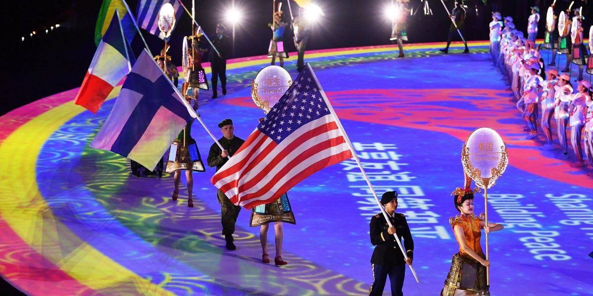

La polémica sobre el posible origen del Covid-19 en los Juegos Militares de Wuhan

El pasado mes de octubre de 2019, la ciudad China de Wuhan albergó un evento que hasta ahora es poco reconocido a nivel mundial.Se trata de los Juegos Mundiales Militares, los cuales reunieron a un total de 9308 participantes de 109 países, entre los cuales México no estuvo presente.
Sin embargo, ahora 7 meses después de dicho evento, comienzan a surgir teorías que apuntan a que en dicha pudo ser el verdadero origen del Covid-19 a nivel mundial, pues los Juegos Militares se disputaron en la ya conocida ciudad de Wuhan, China, la cual está directamente relacionada con el origen del brote de este virus.
De esta manera, es probable que los primeros brotes de Covid-19 hayan surgido mucho antes de lo esperado y las versiones comienzan a tomar fuerza sobre la celebración de los Juegos Mundiales Militares de Wuhan como el epicentro, pues competidores franceses, españoles y de otras nacionalidades aquejaron síntomas relacionados con el virus tras su participación en este evento multidisciplinario el cual se desarrolló entre el 18 y 27 de octubre de 2019.
Las distintas versiones sobre el posible origen del Covid-19 en los Juegos Militares
Desde china, el portavoz del Ministerio de Exteriores de China, Zhao Lijan, acusa directamente a los militares estadounidenses de portar con ellos el Covid-19 y ser los autores intelectuales de la pandemia que conocemos hoy en día, contradiciendo así los dichos de Donald Trump y el gobierno de Estados Unidos, quienes aseguran que el virus salió de un laboratorio chino.
La deportista francesa Elodie Clouvel, aseguró que a su regreso a su país, comenzó a presentar síntomas que jamás había tenido, los cuales posteriormente fueron los que se relacionaron con el coronavirus.Además, la competidora militar de Pentatlón, reveló que también su compañero, Valentín Belaud se enfermó.Por lo que tras consultar al médico de la delegación militar francesa, les confirmó el contagio de decenas de militares en los Juegos.
España es otro de los países que recientemente ha comenzado a relacionar las entonces extrañas enfermedades de sus participantes en los Juegos Militares con los síntomas de Coronavirus.Pues un reportaje de la Agencia EFE relata que al menos cuatro militares estuvieron relacionados con Covid-19 tras su vuelta de Wuhan a finales de octubre y principios de noviembre.
Incluso hay revelaciones por parte del Diario de Valladolid ‘El Mundo’ las cuales apuntan a que el Ministerio de Defensa de España ha impuesto una ley de silencio entre la delegación española ante esta situación.
'Me ha llegado información de que algunos medios de comunicación están contactando con deportistas militares en relación a los Juegos Mundiales Militares, todo tras las noticias recientemente publicadas del Ejercito de Francia que aseguran haber tenido los síntomas del Covid-19', explica un comunicado emitido por la Defensa de España, la cual invita a no realizar declaraciones relacionadas.
En esta pasada edición, México no formó parte de los países invitados a los Juegos Mundiales Militares al igual que en las seis pasadas.¿La razón?: México no pertenece al Consejo Internacional Militar de Deportes (CISM) por sus siglas en inglés.
Es por ello que de esta manera, México es curiosamente el único país del continente americano que no forma parte de esta celebración militar que se lleva a cabo cada 4 años al igual que una justa olímpica profesional.
Como ya se mencionó, un total de 109 naciones participaron en estos Juegos Militares en Wuhan, destacando entre ellos la participación de las siguientes naciones que fueron las que más atletas militares aportaron.
Alemania (243) Brasil (329) Canadá (104) China (553) Corea del Norte (156) Corea del Sur (172) España (111) Estados Unidos (172) Francia(273)
Posted On: 2020-05-17T00:00:00
Content Date: 2020-05-17
Download Date: 2021-04-21
Document ID: L0C04AQGB